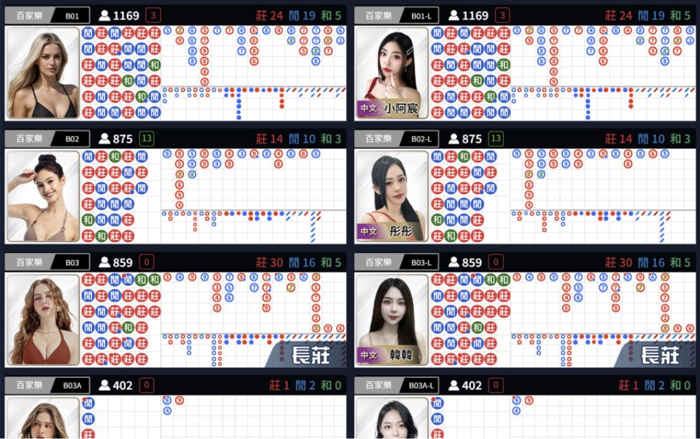
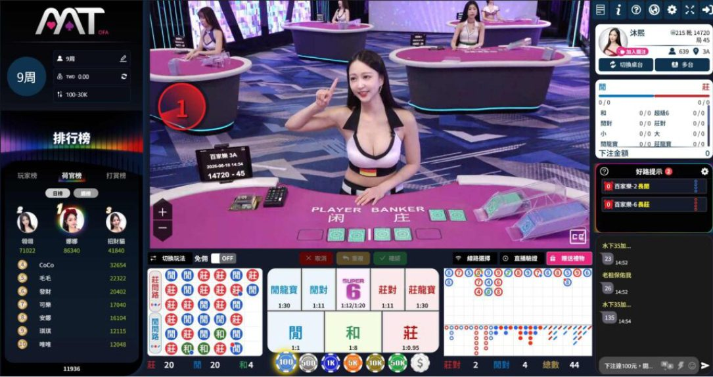

MT荷官回歸了嗎？MT荷官直播與JP真人百家樂解析
MT荷官回歸了嗎 ？完整解析 MT真人直播 最新變化，揭秘 MT荷官直播 從真人發牌轉為直播陪玩的差異，以及DG真人百家樂牌局呈現方式；同步解析 JP真人百家樂 真人發牌、隨機倍率特色與 JP真人試玩 流程，一次看懂MT荷官回歸後的新模式與JP真人玩法差異。
MT荷官回歸了嗎？
不少以前玩過MT真人的玩家，近期最關心的就是「MT荷官回歸了嗎？」從目前呈現方式來看，熟悉的MT荷官確實重新出現在直播內容中，不過這次回歸並不是完全恢復過去由MT荷官直接坐在百家樂桌前發牌的形式，而是改以新的直播方式出現。因此現在看到的MT真人直播，需要把MT荷官直播與真人百家樂牌局分開理解，才能看懂目前MT真人的直播模式、荷官角色與百家樂呈現方式；如果習慣JP真人百家樂這類真人荷官直接發牌的桌台，更能看出兩種真人直播模式在玩法與畫面呈現上的差異。
MT荷官重新出現
MT荷官重新出現在玩家面前，是這次MT真人直播最明顯的變化。不過目前MT荷官的角色與過去不同，重點轉向直播內容與玩家互動，而不是單純負責真人百家樂發牌。對曾經熟悉舊版MT真人的玩家來說，雖然再次看到熟悉的MT荷官，但實際進入MT荷官直播後，會發現荷官角色、直播陪玩方式與過去真人百家樂桌台已有明顯改變，這也是理解「MT荷官回歸了嗎」的重要關鍵；至於想熟悉真人荷官發牌、百家樂桌台與隨機倍率玩法的玩家，後續也能透過JP真人試玩進一步了解JP真人百家樂的操作方式。

MT荷官直播和以前差在哪
要了解現在的MT荷官直播，最簡單的方法就是從荷官角色與真人百家樂呈現方式開始看。過去玩家進入MT真人百家樂桌台，可以直接觀看MT荷官洗牌、發牌與完成每局百家樂流程；現在則轉變為MT荷官直播陪玩，百家樂牌局畫面另外呈現。也就是說，MT真人直播中的荷官重新出現，並不等於過去的真人發牌模式完整回歸，而是MT荷官的直播角色與百家樂牌局呈現方式出現改變；這也是不少玩家搜尋「MT荷官回歸了嗎」時，最需要先了解的新舊模式差異。
之前由MT荷官發牌
過去的MT真人直播比較接近一般玩家熟悉的真人百家樂形式，由MT荷官直接坐在百家樂桌前進行發牌，玩家一邊觀看真人荷官完成牌局，一邊進行莊、閒等投注。當時MT荷官、真人荷官直播與百家樂牌局集中在同一個真人桌台體驗中，因此玩家看到荷官時，也能直接觀看該局百家樂的洗牌、發牌與結果流程，這與現在的MT荷官直播陪玩模式有所不同，也和JP真人百家樂以真人荷官發牌為核心的桌台呈現方式形成不同方向。

現在以直播陪玩呈現
目前的MT荷官直播則改以直播陪玩的方式呈現，MT荷官的角色從原本直接負責真人百家樂發牌，轉向直播與玩家互動。這也是回答「MT荷官回歸了嗎」時最重要的差異：MT荷官確實重新出現，但目前MT真人直播的呈現方式與以前不同。玩家不能單純把「荷官回歸」理解成舊版MT真人百家樂發牌模式完全恢復，而應從現在的MT荷官直播角色與百家樂牌局分開呈現來理解；若想熟悉真人荷官直接發牌與隨機倍率玩法，後續也可透過JP真人試玩了解JP真人百家樂的桌台操作。

MT真人直播百家樂畫面
現在觀看MT真人直播時，可以把畫面理解成兩個部分，一邊是MT荷官負責直播互動與陪玩，另一邊則呈現實際真人百家樂牌局內容。這種方式與過去由同一位MT荷官直接完成發牌的模式不同，也讓「MT荷官直播」與「百家樂牌局」各自具有不同功能，因此玩家進入MT真人時，可以先分清楚直播陪玩畫面與實際百家樂發牌畫面的用途；這也是不少玩家搜尋「MT荷官回歸了嗎」後，需要進一步了解的MT真人直播模式變化。
MT荷官負責直播互動
目前MT荷官直播的重點放在直播陪玩與互動，玩家觀看真人百家樂的同時，也能看到MT荷官出現在直播畫面。換句話說，現在MT荷官的主要角色不再只是執行洗牌、發牌與開牌流程，而是成為MT真人直播內容的一部分，讓MT荷官直播與百家樂牌局以不同方式呈現，這也是此次MT荷官重新出現後最值得注意的變化之一；相較於JP真人百家樂以真人荷官發牌與百家樂桌台為核心，目前MT更著重荷官直播陪玩的呈現方式。

DG真人呈現百家樂牌局
在目前的呈現方式中，百家樂實際牌局則可以看到DG真人畫面，由DG真人桌台呈現真人荷官發牌與牌局進行內容。因此玩家在觀看MT真人直播時，會同時接觸MT荷官直播與DG真人百家樂牌局。這種呈現方式把直播陪玩與實際真人百家樂發牌區分開來，也與過去MT荷官直接發牌的模式形成不同體驗，玩家可以從畫面直接辨別MT荷官直播與實際牌局內容；若想進一步熟悉真人荷官直接發牌、桌台操作與隨機倍率玩法，也可以透過JP真人試玩了解JP真人百家樂的不同呈現方式。

MT荷官直播 vs JP真人百家樂
如果把目前的MT荷官直播與JP真人百家樂放在一起看，兩者最大的差異就在真人內容與百家樂桌台的呈現方式。MT目前著重荷官直播陪玩與互動，百家樂牌局則透過DG真人畫面呈現，這也是玩家搜尋「MT荷官回歸了嗎」後需要了解的重要變化；JP真人百家樂則以真人荷官發牌的百家樂桌台為核心，玩家可以直接觀看真人荷官完成牌局，同時操作莊、閒等下注區域。因此從MT真人直播的陪玩模式、真人荷官角色到百家樂桌台玩法來看，MT荷官直播與JP真人百家樂提供的體驗方向並不相同。
另一個明顯差異是JP真人百家樂加入隨機倍率玩法，玩家先完成當局下注，之後系統才會顯示該局隨機倍率，因此下注前無法預先知道當局倍率，也不能看到倍率後再修改已確認的投注。對玩家來說，如果重視直播陪玩與荷官互動，可以先了解目前的MT真人直播與MT荷官直播；如果主要想觀看真人荷官發牌並體驗隨機倍率百家樂，則可以透過JP真人試玩熟悉JP真人百家樂的真人桌台、下注流程與隨機倍率操作方式。
| 比較項目 | MT真人直播 | JP真人百家樂 |
|---|---|---|
| 主要形式 | MT荷官直播陪玩與互動 | 真人荷官發牌與百家樂桌台 |
| 百家樂牌局 | 透過DG真人畫面呈現百家樂牌局 | 真人荷官直接完成百家樂牌局 |
| 玩法特色 | 以MT真人直播與荷官陪玩為主 | 完成下注後出現隨機倍率 |
JP真人試玩教學
第一次接觸JP真人百家樂，可以先透過JP真人試玩熟悉真人百家樂桌台，而不是一進入遊戲就急著操作。進入JP真人後，先找到真人百家樂分類，再挑選想體驗的桌台，進入後可以看到真人荷官直播、莊閒投注區、籌碼、下注倒數、牌路與隨機倍率等資訊。進行JP真人試玩時，可以先了解莊、閒等投注區域的位置，再確認籌碼選擇與下注倒數時間，完成下注後再觀察隨機倍率出現的位置，最後等待真人荷官完成發牌與結果判定；透過完整走過一次JP真人試玩流程，就能比較容易理解JP真人百家樂與一般真人百家樂在操作、真人桌台及隨機倍率機制上的不同。
- STEP 1：進入JP真人官網
- STEP 2：點選真人
- STEP 3：選擇想玩的遊戲種類
- STEP 4：開始下注
立即體驗JP真人百家樂隨機倍率
看完「MT荷官回歸了嗎」以及MT真人直播、MT荷官直播的變化後，如果想回到真人荷官發牌的百家樂體驗，可以直接前往JP真人，透過JP真人試玩熟悉JP真人百家樂的真人桌台、莊閒下注、牌路與隨機倍率玩法；JP真人的隨機倍率會在完成下注後出現，想體驗不同於傳統百家樂的玩法，可以先從試玩了解操作與規則，再依自己的娛樂預算決定是否繼續體驗。
 免費試玩
免費試玩常見問題 FAQ
Q1：MT荷官真的回歸了嗎？
就本文描述的目前形式來看，MT荷官已重新出現在直播內容中，但「MT荷官回歸了嗎」不能只理解為以前的發牌模式回歸。現在主要採取MT荷官直播陪玩的方式，與過去由MT荷官直接負責真人百家樂發牌有所不同。
Q2：MT真人直播現在還是MT荷官發牌嗎？
目前本文描述的MT真人直播形式並非單純由MT荷官直接負責百家樂發牌，而是MT荷官負責直播互動與陪玩，百家樂牌局則呈現DG真人畫面，因此荷官角色與以前已有改變。
Q3：MT荷官直播與以前最大的差別是什麼？
以前MT荷官主要負責真人百家樂桌台的實際發牌，現在MT荷官直播則以直播陪玩與互動為主要呈現方式。最大的變化就是MT荷官從「發牌角色」轉變為「直播陪玩角色」。
Q4：JP真人百家樂和MT真人直播有什麼不同？
JP真人百家樂以真人荷官發牌與百家樂桌台為核心，並加入完成下注後才出現的隨機倍率機制；目前本文描述的MT真人直播則以MT荷官直播陪玩搭配百家樂牌局畫面為主要形式，因此兩者在荷官角色與玩法呈現上有所不同。
Q5：JP真人試玩可以先熟悉哪些功能？
透過JP真人試玩可以先熟悉真人荷官直播、莊閒投注區、籌碼、下注倒數、牌路、隨機倍率與結果顯示位置。新手可以先理解整個JP真人百家樂操作流程，再依自己的娛樂預算決定是否繼續體驗。